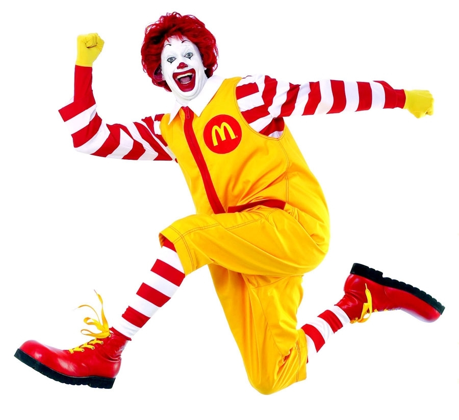

Suivez les commentaires de chaque page HTML pour compléter l'exercice.
Lien vers la page : accueil
Lien vers la page : équipe
Lien vers la page : contact
Lien vers la page : chat_1
Lien vers la page : chat_2
Lien vers la page : chat_3
Liste de nos membres :

Lien vers la page de l'IUT de Haguenau